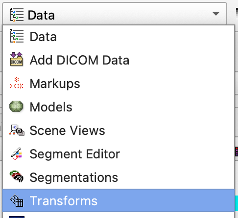
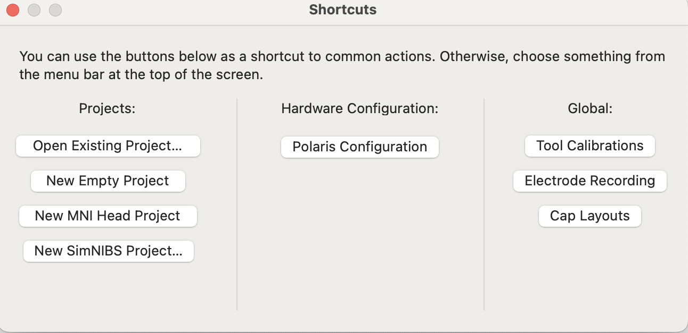
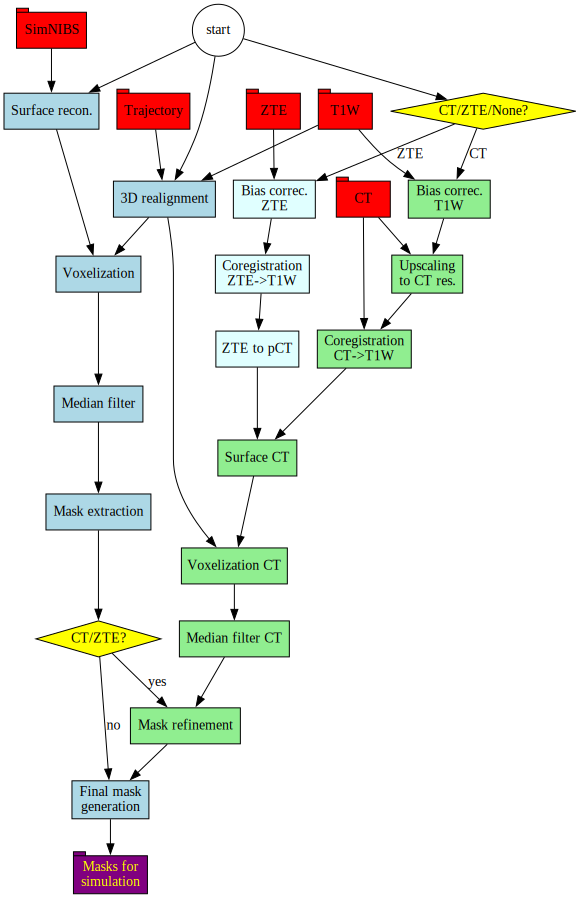
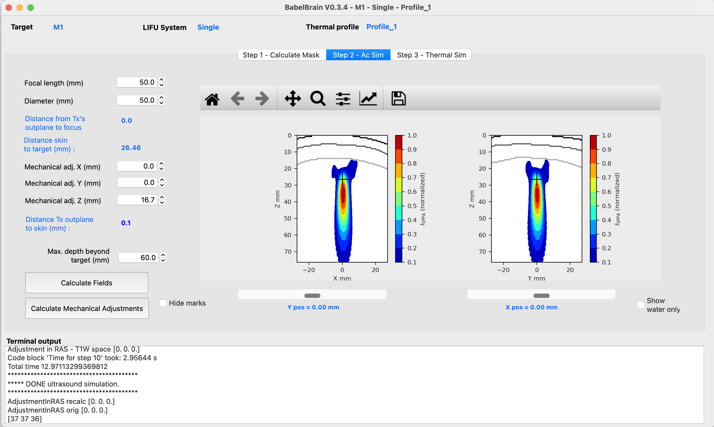

Pipeline description
BabelBrain takes 3D imaging data (MRI and, if available, CT) along with a trajectory indicating the location and orientation of an ultrasound transducer to target a location in the brain.

Currently, five types of transducers are supported:
- Single. This is a simple focusing single-element transducer. The user can specify diameter, focal length and a frequency between 100 kHz and 700 kHz.
- H317. This is a 128-element phased array with a focal length of 135 mm and F#=0.9. The device is capable to operate at 250 kHz and 700 kHz.
- CTX_500. This is a device commercialized by the company NeuroFUS that has 4 ring elements, with a focal length of 63.2 mm and F# = 0.98, and operates at 500 kHz.
- H246. This is a flat ring-type device that has 2 annular elements, with a diameter of 33.6 mm and operates at 500 kHz. It offers some degree of focusing by using two transducer elements.
- BSonix. These are devices commercialized by the company Brainsonix at fixed focal lengths of 55, 65 and 80 mm as reported in Schafer et al..
The specific capabilities of each transducer are considered during the simulations.
1 - Preliminary steps
- Mandatory: Collect T1W (and optionally T2W) imaging of a participant. Highly recommended to use 3D isotropic (1 mm-resolution) scans.
-
Mandatory: Execute SimNIBS 3.x
headrecoor SimNIBS 4.xcharmprocessing tool:headreco all <ID> <Path to T1W Nifti file> <Path to T2W Nifti file>or
charm <ID> <Path to T1W Nifti file> <Path to T2W Nifti file><ID>is a string for identification. A subdirectorym2m_<ID>will be created. Take note of this directory, this will be referred to as the SimNIBS output directory in the following of this manual.Note: Sometimes,
charmmay complain that the qform and sform matrices are inconsistent. We have observed this when converting DICOM datasets withdcm2niix. Ifcharmcomplains, you can try passing the--forceqformparameter when executingcharm. -
Mandatory: Identify the coordinates of the target of focus ultrasound in T1W space. If you need to start in standardized space (e.g. MNI), there are many tools (FSL, SPM12, etc) that can be used to convert from standardized space to T1W space.
For example, with FSL, a simple csv file (
mni.csv) can be created with the coordinates in MNI such as-32.0 -20.0 65.0. Then run the following commandsflirt -in <path to T1W nifti> -ref $FSLDIR/data/standard/MNI152_T1_1mm -omat anat2mni.xfm -out anat_normstd2imgcoord -img <path to T1W nifti> -std $FSLDIR/data/standard/MNI152_T1_1mm.nii -xfm anat2mni.xfm mni.csv > natspace.csvThe file
natspace.csvwill contain the MNI coordinates converted to T1W space. Please note that often visual inspections could be required to confirm the location. -
Optional: CT scan of the participant. Depending on the study being conducted, counting with a CT scan improves the precision of the simulation.
- Optional:: ZTE scan of the participant. A pseudo-CT scan can be reconstructed using a Zero Echo Time (ZTE) MRI scan. Details on MRI scan parameters and methods for pseudo-CT reconstruction (using the "classical" approach) can be found in the work presented by Miscouridou et al. (DOI: 10.1109/TUFFC.2022.3198522). The user needs only to provide the Nifti file of the ZTE scan. BabelBrain will do the transformation to pseudo-CT as detailed in Miscouridou et al. A Nifti file with the pseudo-CT will be generated.
1.a - Availability of CT/ZTE scans
If no CT or ZTE scans are available, a mask representing the skull bone will be generated from the headreco or charm tools output. Be sure of inspecting the generated mask Nifti file to ensure the mask is correctly calculated. Our experience indicates that charm tool produces a better skull mask extraction. When using only T1W and T2W as inputs, BabelBrain uses a generic mask to represent the skull bone (including regions of trabecular and cortical bone). Average values of speed of sound and attenuation are assigned to these bone layers. Consult the appendix section for details on the values used.
If a CT or ZTE scan is provided, a mapping of density, speed of sound and attenuation will be produced. Consult the appendix section for details on the mapping procedure.
2 - Planning
The goal of the planning step is to produce a trajectory that provides the location where ultrasound is intended to be focused and the orientation of the transducer in T1W coordinate space. In practice, the trajectory is just an affine matrix applied to a "virtual" needle that describes the location and orientation where focused ultrasound is desired to be concentrated. The tip of the trajectory needs to be at the intended target. The position of the transducer will be relative to the tip location. The details using 3DSlicer can illustrate this.
Acoustic path STL helpers
BabelBrain includes a series of complementary STL files representing the "acoustic" path. Each STL file includes a group of circular meshes combined with a target needle that represent the acoustic cross sections of a field produced with a transducer with F#=1.0 at different depths. As noted in the instructions below, these meshes help to verify a correct alignment with the skin.
2.a - Planning with 3DSlicer
- Install the SlicerIGT extension in 3DSlicer (restart 3DSlicer if requested)
-
Load T1W planning data

-
In the IGT extension menu, select "Create Models"

-
Load one of the STL helpers as a
modelwithRAScoordinate convention. The model will appear by default centred in the T1W space and pointing in the inferior\rightarrowsuperior direction
Alternatively, you can create a needle with a length of 100 mm.

-
Select the model in the data panel and edit the properties to make it appear in the "Slice Display"

-
Create a new transform and give it a name related to the target (e.g. LGPI, RSTN, LVIM, RM1, etc.). This is important as BabelBrain will use the name of the transform as a prefix for its output files.

Apply the transform to the model and be sure the transformation is set to
local(little button next to the "invert" button)
-
Select "Volume Reslice Driver" in the IGT module menu

-
Select the linear transform in the two first slice views

-
Select one view to be "Inplane" and the other to be "Inplane 90"

-
In the Data panel, select the linear transform and edit properties, you should be able to see the slice views aligned along the model

-
Adjust the location of the tip of the needle using the translation (LR, PA, IS) controls to match the tip of the model to your area of interest.

-
Adjust the trajectory path using the rotation (LR, PA, IS) controls until finding a trajectory that has a clear path and mimics how the transducer will be placed. Tip: Adjust the trajectory to make it orthogonal to the skin surface in the inline and inline90 views; this recreates the condition of placing a transducer aligned relative to the skin.

Note: If you navigate to other windows in 3DSlicer, the transition and rotation control may be set back to 0s. But the transformation matrix will remain with the latest values applied. Any other adjustment will be added to the transformation matrix. Be sure that the
localoption is always selected. -
Save the transformation in text format. Select "Save data" and select text as the file format. Take note of the path. Suggestion: Select a directory in the same path where T1W or SimNIBS output is located.
2.b - Planning with Brainsight
Alternatively, planning can also be performed with the proprietary software Brainsight made by Rogue Research (Montreal, Canada) for the planning and execution of non-invasive neuromodulation. This software has an existing feature that exports a trajectory that can be used in BabelBrain. The workflow to export a trajectory is very similar to 3DSlicer.
- Create a new "empty" or "SimNIBS" project; use SimNIBS only if you used SimNIBS 3.x with
headreco.

-
Load T1W planning data. If using "SimNIBS" project, it will preload the T1W imaging dataset.

-
Open target window

-
Adjust coordinates and orientation with control in the user interface (right side of screen)

-
Create a new target as a trajectory

-
Rename the trajectory with a name related to the target (e.g. LGPI, RSTN, LVIM, RM1, etc.)
-
Export trajectory with "Export" function and select "Orientation (3 directions vectors)" and "NifTI:Scanner" as the coordinate system. Take note of the path. Suggestion: Select a directory in the same path where T1W or SimNIBS output is located.

3 - Simulation with BabelBrain
Now that planning is done, open BabelBrain either from the Applications menu in macOS if the DMG installer was used or with python BabelBrain.py as indicated in the installation section.

3.a - Input data
An input dialog will prompt the different input files required for the simulation.

- Specify the path to the trajectory file and the source (Slicer or Brainsight)
- Select the SimNIBS output directory associated to this test and indicate what tool was used to generate it (
headrecoorcharm) - Select the path to the T1W Nifti file
- Indicate if CT scan is available. Options are "No", "real CT" or "ZTE". Select if coregistration of CT to T1W space must be performed. Depending on your specific preliminary steps, you may have CT already coregistered in T1W space. If coregistration is done by BabelBrain, the resolution of the CT will be preserved. The T1W file will be first bias-corrected and upscaled to the CT resolution and then the CT will be coregistered using the
itk-elastixpackage with rigid coregistration. -
Select a thermal profile file for simulation. This is a simple YAML file where the timings of transcranial ultrasound are specified. For example:
BaseIsppa: 5.0 # W/cm2 AllDC_PRF_Duration: #All combinations of timing that will be considered - DC: 0.3 PRF: 10.0 Duration: 40.0 DurationOff: 40.0This definition helps in the step of thermal simulation with BabelBrain.
BaseIsspais the reference value of acoustic intensity for which the thermal equation will be solved. You can set this to 5 W/cm^2. Choices for other powers will be scaled (no recalculations) based on this value.More than one exposure can be specified. For example:
BaseIsppa: 5.0 # W/cm2 AllDC_PRF_Duration: #All combinations of timing that will be considered - DC: 0.3 PRF: 10.0 Duration: 40.0 DurationOff: 40.0 - DC: 0.1 PRF: 5.0 Duration: 80.0 DurationOff: 50.0When running the thermal simulation step, all the combinations specified in the thermal profile will be calculated.
-
Select the type of transducer to be used in simulations.
-
Once all inputs are set, then click on "CONTINUE"
3.b - Domain generation
The diagram below shows flowchart describing the process for the domain generation.

The first step after specifying input data is to create the simulation domain. The available operating frequencies will depend on the selected transducer. The second main input is the resolution of the simulation expressed in the number of points per wavelength (PPW). The minimum for fast estimation is 6 PPW, and 9 PPW to meet criteria de convergence when compared to other numerical tools. Depending on if CT or ZTE scans are available, options to fine-tune the domain generation will be available. For CT scans, the user can adjust the threshold for bone detection (set by default to 300 HU). For ZTE scans the user can specify the thresholds to select normalized ZTE signal (by default 0.1 and 0.6) to convert to pseudo-CT. Please consult Miscouridou et al.](https://ieeexplore.ieee.org/document/9856605) for details on the "classical" approach to convert from ZTE to pseudo-CT. The execution time in M1 Max processor can take from 1 minute of minutes up to 10 minutes depending on the resolution and availability of ZTE/CT scans. When initiating the calculations, a detailed log output will appear in the bottom region of the window. In case of any error during processing, a dialog message will prompt indicating to consult this window for more details. Once executed, orthogonal views of the domain will be shown. T1W scan is also shown to verify that the mask was correctly calculated.

Once executed, a Nifti file containing the mask describing the different tissue regions will be produced in the directory where the T1W Nifit file is located. It will have a file with the following structure:
<Name of target file>_<Frequency>_<PPW>_BabelViscoInput.nii.gz, for example LinearTransform_500kHz_6PPW_BabelViscoInput.nii.gz. The mask will be in T1W space, facilitating its inspection as overlay with T1W data. The mask has values of 1 for skin, 2 for cortical bone, 3 for trabecular and 4 for brain tissue. A single voxel with a value of 5 indicates the location of the target. The raw data inside the Nifti file is organized in a 3D Cartesian volume that is aligned to the transducer acoustic axis. The Nifti affine matrix ensures the mask can be inspected in T1W space.
If a CT or ZTE dataset is indicated as input, the skull mask will be created using this scan rather than the output of headreco or charm. Also, an overlay of the CT/pseudo-CT will be also shown for verification purposes.

Please note if a <Name of target file>_<Frequency>_<PPW>_BabelViscoInput.nii.gz file exists, the GUI will ask confirmation to recalculate the mask. Selecting "No" will load the previous mask.
If using output from headreco, the STL files for skin, csf and bone are used to produce the high-resolution mask via GPU-accelerated voxelization.
If using output from charm (which does not produces STL files), equivalent STL files are produced from the file final_tissues.nii.gz created by charm. Meshes are created and smoothed (Laplace filtering), and the mask for simulation is calculated via GPU-accelerated voxelization. The STL files of skin, csf and bone will be saved in the output directory of SimNIBS by BabelBrain.
3.c - Transcranial ultrasound simulation
The second tab in the GUI of BabelBrain shows the ultrasound simulation step. The diagram below shows a flowchart of this step.

The choices of this tab will depend on the selected transducer. Simulation results in this step are shown in normalized conditions. The final step (see below) later will show the results denormalized in function of the selected intensity at the target. Common to all transducers, the distance of the maximal depth beyond the target location is set to a user-configurable distance of 40 mm.
3.c.i - CTX_500
For the CTX_500 transducer, the initial assumption is that this type of transducer will be placed in direct contact with the skin and that the focusing distance will be adjusted according to the desired target.

The initial "TPO Distance" (an adjustable parameter in the CTX_500 device) is calculated based on the distance skin to the target.
It is recommended to simulate with the default values to evaluate the degree of focus shift caused by the skull. Simulation should take a couple of minutes in a M1 Max system.

The results window will show two orthogonal views of normalized acoustic intensity. The intensity in the skin and skull regions is masked out (it can be visualized later in those regions in step 3). In this step, the main goal is to ensure a correct spatial focusing on the target. In the example, a shift of 5 mm of the focal spot towards the transducer can be observed. This shift can be corrected by adding 5 mm in the TPO Distance input (in the example, we adjust to 52.5 mm). Also, there is a small lateral shift in the negative "Y" direction. This can be corrected with the "Mechanical" adjustment controls (in this example we adjust +1mm in the Y direction). Please note that in the simulation domain, X, Y and Z are not mapped to subject coordinates. However, at the end of the simulations, there will be a report in which direction in the T1W space this adjustment translates.
After doing the adjustments, the simulation can be repeated.

3.c.ii - H246
The H246 transducer has a similar operation as the CTX_500. The steps presented above apply similarly. As the H246 transducer has a much longer focal length, consider extending the maximal depth of simulations.

3.c.iii - H317
The H317 is a large transducer that uses a coupling cone that is in contact with the skin. The user interface shows small differences compared to CTX_500 and H246. There is a parameter for the Distance cone to Focus that depends on the acoustic cone used for coupling. Because this transducer has 128 elements, the user interface shows also the option to perform electronic refocusing.

3.c.iv - Single
The "Single" transducer is a generic device with a configurable diameter and focal length. Because this is a more general-purpose device, it is not assumed that the transducer is in direct contact with the skin. The transducer is always initially centered at the target, which can make that there could be some space between the transducer out plane and the skin. The user can adjust the mechanical distance on the Z axis until the point the out plane of the transducer reaches the skin.

3.c.iv - BSonix
These are commercial transducers with fixed focal lengths as reported in Schafer et al.. The user can select focal length of 55, 65 and 80 mm. Similar to the CTX_500, it is assumed the device is in direct contact with the skin, with the option to move the transducer away from the skin to simulate placing a coupling pad.

3.d - Thermal simulation
The third tab in the GUI of BabelBrain shows the thermal simulation step. The diagram below shows a flowchart of this step.

The thermal simulation solves the Bio-heat thermal equation (BHTE) for all the combinations of duty cycle, timing and ultrasound exposure indicated in the thermal profile definition file.

The selection of spatial-peak pulse-average intensity (I_{\text{SPPA}}) indicates the desired intensity at the target. The spatial-peak time-average intensity (I_{\text{SPTA}}) is calculated based on the selected timing conditions. Based on the selections of timing and desired I_{\text{SPPA}} in tissue, the I_{\text{SPPA}} in water conditions is calculated after taking into account all the losses. Thermal safety parameters (maximal temperature and thermal doses) in the skin, skull bone and brain tissue are calculated at the locations showing the highest temperature elevation in the whole 3D volume. The MTB, MTS and MTC push buttons in the lower region of the interface select the slice corresponding to the the maximal temperature in brain, skin and skull, respectively.
The Export summary (CSV) action exports the input data paths and user selections used for the simulations. It also includes a table of I_{\text{SPPA}} in water conditions and safety metrics in function of the desired I_{\text{SPPA}} in tissue. Below there is an example of the exported data.
| Isppa | IsppaWater | MI | Ispta | MTB | MTS | MTC | CEMBrain | CEMSkin | CEMSkull |
|---|---|---|---|---|---|---|---|---|---|
| 0.5 | 2.38 | 0.18 | 0.15 | 0.03 | 0.01 | 0.02 | 0.00033419 | 0.000329626 | 0.00033046 |
| 1 | 4.77 | 0.25 | 0.3 | 0.07 | 0.03 | 0.04 | 0.000343142 | 0.000333787 | 0.000335482 |
| 1.5 | 7.15 | 0.31 | 0.45 | 0.10 | 0.04 | 0.05 | 0.000352388 | 0.000338007 | 0.000340589 |
| 2 | 9.54 | 0.35 | 0.6 | 0.13 | 0.06 | 0.07 | 0.00036194 | 0.000342286 | 0.000345782 |
| 2.5 | 11.92 | 0.39 | 0.75 | 0.17 | 0.07 | 0.09 | 0.000371807 | 0.000346625 | 0.000351062 |
| 3 | 14.31 | 0.43 | 0.9 | 0.20 | 0.09 | 0.11 | 0.000382002 | 0.000351024 | 0.000356431 |
| ... | ... | ... | ... | ... | ... | ... | ... | ... | ... |